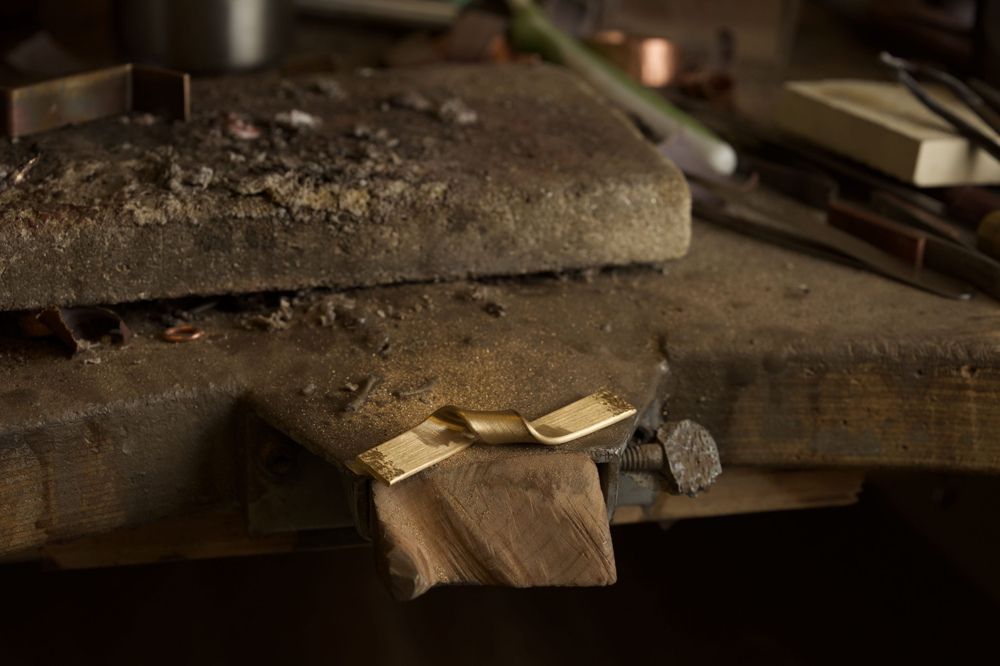

Italian jeweler LAYLITA creates unique pieces that unlock the natural forces embedded in the precious materials he uses. In his hands, gold and platinum are folded, forced and twisted to create a tension that evokes the inherent rhythm of the metal.
Diamonds are dynamic: encircled by the curving lines of each piece, they are part of an action that speaks of movement and growth. Although not directly influenced by the natural world, LAYLITA jewels harness the complexity of organic forms. At once ephemeral and strong, they invoke a powerful calm. His diamond and gold rings may remind you of the exposed roots of a tree winding around a rock. The simple elegance of his designs - soft but never silent - are intended to leave the door wide open to interpretation, allowing the beauty of storytelling to unfold in the mind of each wearer.

~ THE ART OF MAKING ~
The life of a LAYLITA jewel invariably starts with a single strip of precious metal. In his studio in Tilburg, located in the Dutch province of Brabant, LAYLITA places a passionate focus on the rich nature of this material. Each sweeping bend, twist, and turn is the result of a very balanced approach, achieved through manual dexterity and physically forced. His pieces are patterned with ultra-fine lines, the result of a meticulous sanding process. LAYLITA's savoir-faire is rooted in his desire to reflect an inner truth, which is further enhanced by an absence of decoration. Once the gold has found its new form, there is no fuss – it retains a sense of earthiness and authenticity.
Diamonds are introduced when the strip of gold or platinum is being modeled, never after. The gems are not fixed in place by traditional prongs or settings. Instead, they are caught in a metallurgic dance of tension. They are held in place as if by magic. This rare technique is rooted in the belief that materiality possesses its own language, which ultimately reveals itself to LAYLITA through the making process allowing him to embolden and enrich it in its most evocative form.
